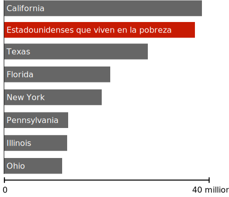

Riqueza mostrada a escala
$1.000
$63.179 dólares (Ingreso familiar promedio en EEUU)
$1 millón de dólares
$1000 millones de dólares
$139.000 millones de dólares (Riqueza de Jeff Bezos)
Jaja!, es broma, estamos a ⅓ del camino. Sigue desplazándote, hay más para ver.
Incluso la fortuna de las personas muy ricas se ve eclipsada por la riqueza incomprensible del 0,0001%.
Estas personas pueden verse a sí mismas como fabulosamente ricas, y a menudo se oponen a las políticas que ayudan a reducir la desigualdad.
Pero muchos no han comprendido completamente el enorme abismo entre ellos y los súper ricos.
Podemos tener un mundo en el que existan personas ricas, sin entregar casi todo el dinero a los súper ricos.
Ningún ser humano necesita o merece tanta riqueza.
400 estadounidenses más ricos ($ 2,96 billones de dólares)
Un billón de dólares es una cifra tan grande, que bien podría decir «once mil millones de trillones de dólares». Entonces, en esta sección, trataremos de comprender la escala de esta figura al observar lo que se podría lograr con varios trozos de esta riqueza.
A medida que avanzamos, trate de tener en cuenta: toda esta riqueza está controlada por un grupo tan pequeño que podría caber en un solo avión 747, con 260 asientos sobrantes.
¿Qué podríamos hacer con el 3% de todo este dinero?
Hacerle la prueba de Coronavirus a todos los estadounidenses
Al momento de escribir este artículo, las pruebas en los Estados Unidos están muy lejos de lo que se necesita para reabrir la economía. Según algunas estimaciones, aumentar las pruebas lo suficiente a alrededor de 30 millones de pruebas por semana costaría alrededor de $100 mil millones en total, o alrededor del 3% de la riqueza actualmente controlada por los 400 estadounidenses más ricos.
Erradicar permanentemente la malaria
La malaria es una de las peores enfermedades infecciosas que jamás haya visitado a la humanidad, matando posiblemente a más personas que cualquier otra enfermedad infecciosa en la historia. Solo en el siglo XX, la malaria mató a más personas que la Peste Negra.
El coronavirus nos ha mostrado todos los horrores de vivir con una enfermedad mortal. Lamentablemente, para gran parte del mundo, este horror fue una característica constante de la vida diaria incluso antes del coronavirus.
Todas estas muertes son prevenibles. El tratamiento y la prevención de la malaria es una ciencia bien entendida, practicada universalmente en el mundo desarrollado.
Se estima que la malaria podría erradicarse en todo el mundo para 2030 por un costo de alrededor de $ 1,84 dólares por persona en riesgo por año, o alrededor de $ 100 mil millones de dólares en total. Esto representaría alrededor del 3% de la riqueza que actualmente poseen los 400 estadounidenses más ricos.
Alrededor de 800 niños morirán de malaria hoy. Un pequeño grupo de personas súper ricas podría detenerlo por una suma de dinero tan pequeña que probablemente ni siquiera notarían su ausencia. Pero ellos eligen no hacerlo.
¿Qué podríamos hacer con el 5% de este dinero?
Proporcionar $1.200 dólares a cada hogar estadounidense.
El reciente estímulo de coronavirus fue el más grande jamás aprobado por el Congreso. Fue financiado en su totalidad a través del gasto deficitario, que será pagado por los contribuyentes por generaciones. La carga de pagar esta deuda podría borrarse en un instante con un impuesto sobre los súper ricos tan pequeño que ni siquiera lo sentirían.
La riqueza de 400 estadounidenses podría haber financiado toda la ley CARES (The Coronavirus Aid, Relief, and Economic Security), incluidos los rescates corporativos, el aumento del desempleo y el aumento de pruebas, con casi un billón de dólares sobrantes.
En cambio, el contribuyente estadounidense se quedará atrapado con sus facturas.
Sacar a todos los estadounidenses de la pobreza.
Population of US States compared to poverty, 2019
Cada persona en Estados Unidos podría elevarse por encima de la línea de pobreza con un subsidio en efectivo por única vez de alrededor de $ 10.000 dólares por familia empobrecida (y alrededor de $ 7.000 dólares para personas empobrecidas). El costo total sería de $170 mil millones de dólares, un poco más del 5% de la riqueza actualmente controlada por 400 individuos.
Puede parecer contrario a la intuición que un subsidio único podría tener un impacto duradero en la pobreza crónica. Pero una de las verdades sorprendentes sobre la pobreza es que es fluida. Los estadounidenses entran y salen de la pobreza muchas veces a lo largo de sus vidas, y un buen año puede tener un efecto masivo y duradero.
Una gran cantidad de datos ahora respalda la idea de que las transferencias de efectivo de una sola vez pueden transformar permanentemente una economía local. Dada una inesperada ganancia, las personas invierten en su futuro. Vuelven a la escuela, obtienen transporte, pagan el cuidado de niños, pagan deudas debilitantes y hacen cualquier cantidad de cosas para mejorar sus perspectivas profesionales y su futuro financiero.
En los Estados Unidos, las personas que escapan de la pobreza en un año determinado, aproximadamente la mitad permanece fuera de la pobreza durante al menos cinco años después. Aproximadamente un tercio todavía está fuera de la pobreza diez años después.
Esto no sería una solución permanente para todos los estadounidenses. Seguramente, algunos regresarían rápidamente a la pobreza, y otros enfrentarían deudas tan grandes que el subsidio haría poca diferencia. Pero para decenas de millones de estadounidenses, este sería un evento que les cambiaría la vida. Sería una generación que define un programa social que reestructura nuestra economía en las próximas décadas.
¿Qué podríamos hacer con el 6% de este dinero?
Reembolsar impuestos de 2018 para todos los hogares que ganen menos de $ 80.000
En 2018, los ingresos fiscales federales combinados entre todos los hogares de EE. UU. que ganaron menos de $ 80.000 dólares por año fueron de alrededor de $ 200 mil millones de dólares. Este dinero, tomado íntegramente de estadounidenses pobres y de clase media, podría ser devuelto por una pequeña fracción de la riqueza controlada por el 0,0001%.
¿Qué podríamos hacer con el 8% de este dinero?
Proporcionar agua potable y acceso al baño a todos los humanos en la tierra.
Alrededor de 844 millones de personas no tienen acceso a agua limpia de ningún tipo. Aproximadamente el mismo número no tiene acceso a un inodoro o letrina de ningún tipo y, por lo tanto, defeca al aire libre.

Sin agua limpia
Contaminated water is a major source of disease, including cholera, dysentery, and typhoid. It is estimated that contaminated water kills about 829,000 people every year, making it one of the world's biggest killers. The cost to provide clean water and waste disposal for everyone on earth would be about $240 billion, or 8% of the wealth controlled by the 400 richest Americans.
What could we do with 40% of this money?
Give $10,000 to every American household
As Americans debate how and when to open the economy after coronavirus, we are frequently presented with a seemingly impossible choice between risking millions of lives and sliding into a great depression through a continued lock down. This is a repugnant lie.
The money to weather this storm while maintaining quarantine exists, it's just a matter of finding the political will to take it.
What could we do with 85% of this money?